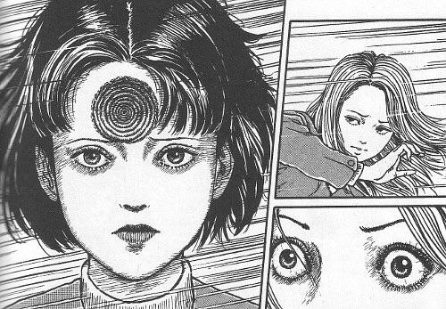
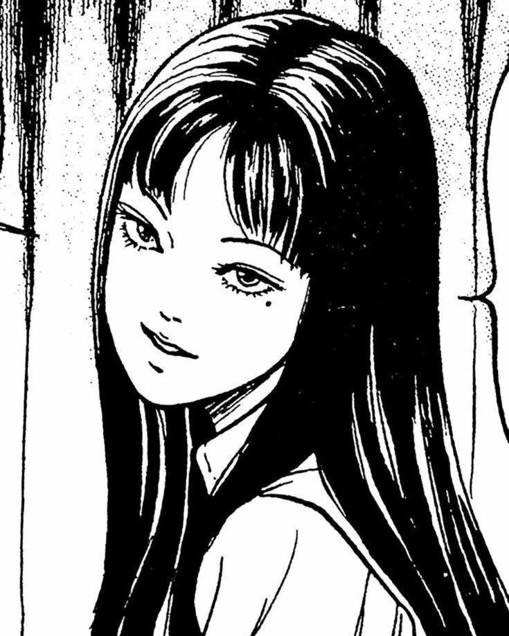

Eleve seu nivel de terror ao extremo com as historias do junji ito.
Junji Ito (em japonês: 伊藤 潤二; romaniz.: Itō Junji; Gifu, 31 de julho de 1963) é um mangaká japonês, especialista em histórias de horror. Alguns de seus trabalhos mais notáveis incluem Tomie, uma série que narra uma garota imortal que leva seus admiradores à loucura; Uzumaki, uma série de três volumes sobre uma cidade assombrada pela entidade sobrenatural da espiral; e Gyo, uma história de dois volumes onde os peixes são controlados por uma cepa de bactérias sencientes denominada "fedor de morte". Seus outros trabalhos estão reunidos em The Junji Ito Horror Comic Collection, uma coletâneacomposta de dezesseis volumes com histórias curtas nas quais ocasionalmente surge um personagem nomeado de Souichi e sua família, e Junji Ito's Cat Diary: Yon & Mu, a história sobreum casal que se muda para um novo lar com seus gatos.
Conheça suas principais obras
Junji Ito é um famoso mangaká japonês, conhecido principalmente por suas histórias de terror, suspense e horror psicológico. Ele nasceu em 31 de julho de 1963, na província de Gifu, no Japão. Seu estilo é marcado por desenhos muito detalhados e situações estranhas e perturbadoras. Entre suas obras mais conhecidas estão:
Uzumaki:
Uzumaki é uma das obras mais famosas de Junji Ito, publicada originalmente entre 1998 e 1999. É um mangá de terror psicológico e horror sobrenatural ambientado na pequena cidade fictícia de Kurouzu-cho.

Tomie
Tomie é uma das obras mais conhecidas de Junji Ito e também uma das primeiras histórias importantes de sua carreira. A série começou a ser publicada em 1987 e apresenta uma mistura de terror psicológico, sobrenatural e horror corporal.

Uzumaki acompanha a vida de Kirie Goshima, uma jovem que mora na pequena cidade de Kurouzu-cho, junto com seu pai e sua família. No começo, Kirie percebe que seu namorado, Shuichi Saito, está preocupado com algo estranho: o pai dele começa a ficar obsessionado por espirais. Ele passa a observar formatos espirais em objetos, plantas e até em coisas do cotidiano. A situação fica cada vez mais estranha. Depois disso, outros moradores da cidade começam a apresentar comportamentos e acontecimentos relacionados às espirais. O fenômeno vai se espalhando e afetando toda a cidade, fazendo com que acontecimentos cada vez mais sobrenaturais e assustadores aconteçam. Kirie e Shuichi tentam entender o que está acontecendo e encontrar uma maneira de escapar de Kurouzu-cho. Porém, quanto mais eles descobrem sobre a maldição, mais percebem que a cidade inteira parece estar presa ao fenômeno das espirais. O interessante da história é que Junji Ito não explica tudo de forma tradicional. A espiral funciona quase como uma força sobrenatural, levando as pessoas à obsessão e causando acontecimentos cada vez mais bizarros. Em resumo: Uzumaki é a história de uma cidade que é lentamente consumida por uma misteriosa maldição relacionada às espirais, enquanto Kirie e Shuichi tentam sobreviver e descobrir o que está acontecendo.